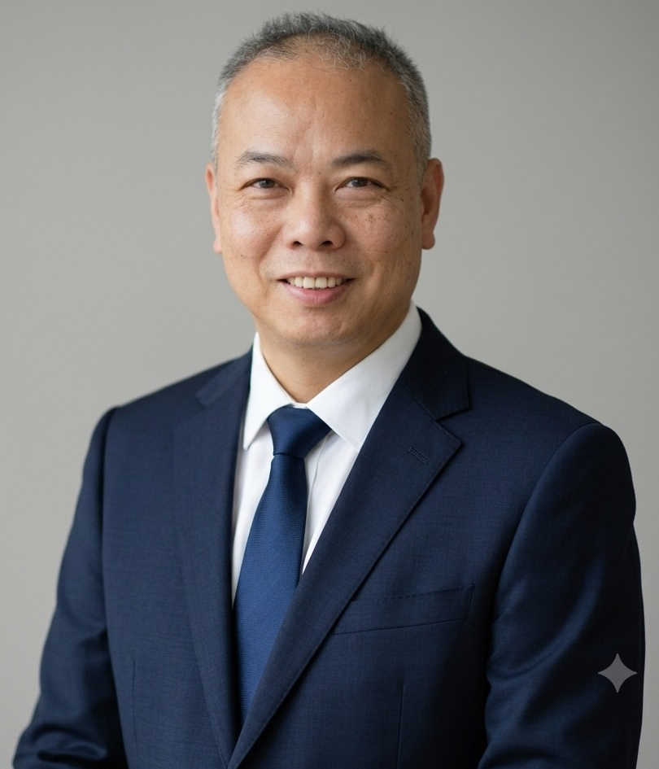

-
2002/09~2007/06
Ph.D., Department of Computer Science and Information Engineering, National Central University, R.O.C. -
2000/09~2002/06
M.S., Department of Electrical Engineering, Tamkang University, R.O.C. -
1996/09~2000/06
B.S., Department of Electrical Engineering, Tamkang University, R.O.C.

Yu-Xiang Zhao received the B.S. and M.S. degrees in electrical engineering from Tamkang University, Taiwan, in 2000 and 2002, respectively, and the Ph.D. degree in computer science and information engineering from National Central University, Taiwan, in 2007. He is currently a professor of computer science and information engineering at National Quemoy University, Taiwan. His research interests deep learning, pattern recognition, and image processing.
Education
Work Experiences
-
2026/08~迄今
主任，計算機與網路中心，國立金門大學 -
2026/02~迄今
教授，資訊工程學系，國立金門大學 -
2019/08~2025/07
主任，資訊工程學系，國立金門大學 -
2017/08~2019/07
組長，計算機與網路中心軟體系統組，國立金門大學 -
2017/08~2026/01
副教授，資訊工程學系，國立金門大學 -
2013/08~2014/07
主任，計算機與網路中心，國立金門大學 -
2010/08~2011/07
組長，圖書資訊處軟體系統組，國立金門大學 -
2010/08~2017/07
助理教授，資訊工程學系，國立金門大學 -
2009/06~2012/12
助理教授級研究員，財團法人中華工商研究院 -
2009/09~2010/07
主任，人本智慧中心，大華技術學院 -
2009/02~2010/07
助理教授，資訊工程學系，大華技術學院
Research Areas
- 深度學習 (Deep Learning)
- 機器學習 (Machine Learning)
- 計算式智慧 (Computational Intelligence)
- 影像處理 (Image Processing)
- 擴增實境與虛擬實境應用 (Augmented Reality and Virtual Reality)
- 人機互動設計 (Human-Computer Interaction)
Projects
-
115/08/01~116/07/31
科技部-專題研究計畫(一般研究計畫)
主持人，115-2410-H-507-001-，以虛擬實境為基礎之金門戰地歷史互動學習與沉浸式體驗教室 -
115/08/01~116/07/31
國科會-專題研究計畫(大眾科學教育計畫)
共同主持人，115-2515-S-507-003-，科普活動：金門縣全民科學週暨智慧永續科普實驗與推廣計畫 -
114/08/01~116/07/31
國科會-專題研究計畫(大眾科學教育計畫)
共同主持人，114-2515-S-507-001-MY2，科普活動：AIOT巨盒—金門縣人工智慧物聯網程式設計科學營 -
114/08/01~115/07/31
國科會-專題研究計畫(大眾科學教育計畫)
共同主持人，114-2515-S-507-002-，科普活動：金門全民科學週暨Net Zero永續發展科普推廣計畫 -
114/07/01~115/02/28
國科會-指導大專專題研究計畫
汪章貴，114-2813-C-507-005-E，AI即時互動導覽系統 -
113/08/01~114/07/31
國科會-專題研究計畫(大眾科學教育計畫)
共同主持人，113-2515-S-507-001-，科普活動：金門縣全民科學週暨共建淨零碳海島科普推廣計畫 -
112/08/01~114/07/31
國科會-專題研究計畫(大眾科學教育計畫)
共同主持人，112-2515-S-507-003-MY2，科普活動：Metaverse-離島偏鄉金門元宇宙科學營(主題四) -
112/08/01~113/07/31
國科會-專題研究計畫(大眾科學教育計畫)
共同主持人，112-2515-S-507-001-，科普活動：金門縣大眾科學博覽會暨離島偏鄉 ESG 推廣計畫(主題一) -
112/07/01~113/02/28
國科會-指導大專專題研究計畫
魏仲彥，112-2813-C-507-005-E，以深度學習與智慧問診系統為基礎之AR穴位互動顯示智慧鏡設計 -
112/01/01~112/12/31
產學合作-金門縣政府-政府標案
主持人，111年度金門縣公共自行車租賃系統維護管理委託服務工作(112後續擴充) -
111/08/01~112/07/31
科技部-專題研究計畫(一般研究計畫)
主持人，111-2221-E-507-006-，以實例感知生成對抗網路為基礎之閩式建築風格轉換研究 -
111/08/01~112/07/31
科技部-專題研究計畫(大眾科學教育計畫)
共同主持人，111-2515-S-507-001-，科普活動：機器人快樂學--離島偏鄉機器人科技與coding程式教育(主題三) -
111/03/17~111/12/31
產學合作-金門縣政府-政府標案
主持人，111年度金門縣公共自行車租賃系統維護管理委託服務工作 -
110/08/01~111/07/31
科技部-專題研究計畫(大眾科學教育計畫)
共同主持人，110-2515-S-507-001-，科普活動：我是創客—應用Neuron神經元電控積木以提升離島金門地區學生科學學習動機與創意設計(主題三) -
110/07/01~111/03/31
產學合作-山外一條根青草行-金門縣政府地方產業創新研發推動計畫(金門地方型SBIR)
主持人，結合人體偵測技術之互動體驗打造一條根蒸氣足浴室及一條根教育互動室 -
109/08/01~110/07/31
科技部-專題研究計畫(大眾科學教育計畫)
共同主持人，109-2515-S-507-001-，科普活動：與AI做朋友--人工智慧機器人與Scratch 3程式設計(主題一) -
108/09/01~109/08/31
科技部-專題研究計畫(大眾科學教育計畫)
共同主持人，108-2515-S-507-002-，科普活動：金門縣全民科學嘉年華（主題三） -
108/08/01~109/07/31
科技部-專題研究計畫(一般研究計畫)
主持人，108-2221-E-507-009-，以深度卷積生成對抗網路為基礎的金門風獅爺古蹟修復研究 -
108/08/01~109/07/31
科技部-專題研究計畫(一般研究計畫)
共同主持人，108-2221-E-507-002-，應用人工智慧技術提升二維地電阻影像解析研究 -
107/09/01~108/11/30
科技部-專題研究計畫(大眾科學教育計畫)
共同主持人，107-2515-S-507-002-，科普活動：生活中的科學－科普活動推廣（主題三） -
107/02/01~108/01/31
教育部-資通訊軟體創新人才推升推廣計畫，智慧終端與人機互動-B類
主持人，體適能訓練管理裝置 -
106/11/01~107/11/30
科技部-專題研究計畫(規劃推動補助計畫)
共同主持人，106-2634-F-038-002-，臺北醫學大學醫療體系巨量影像資料庫建立與應用(1/3) -
106/02/01~107/01/31
教育部-資通訊軟體創新人才推升推廣計畫，智慧終端與人機互動-B類
主持人，互動式CPR教學輔具開發 -
106/01/01~106/12/31
教育部-提升校園行動應用服務研發及內容設計人才培育計畫
協同主持人，1門專題課程、8場次推廣活動 -
105/05/18~106/08/31
教育部-提升校園行動應用服務研發及內容設計人才培育計畫
協同主持人，A類課程2門課(計6學分)、C類活動2場次 -
104/07/01~105/02/28
國科會-指導大專專題研究計畫
柯勝富，104-2815-C-507-007-E，互動式心肺復甦術教學輔具實作 -
103/07/01~104/02/28
國科會-指導大專專題研究計畫
李南熺，103-2815-C-507-011-E，數位化智慧型水幕設計 -
102/01/01~102/12/31
國科會-能源國家型科技計畫智慧電網與讀表主軸計畫
共同主持人，NSC 102-3113-P-006-015-，智慧家庭(建築)電能管理先導型計畫(3/3) -
101/01/01~101/12/31
國科會-能源國家型科技計畫智慧電網與讀表主軸計畫
共同主持人，NSC 101-3113-P-006-020-，智慧家庭(建築)電能管理先導型計畫(2/3) -
100/08/01~101/07/31
國科會-專題研究計畫
共同主持人，NSC 100-2221-E-032-069-，結合特徵排序的改良式浮動序列特徵擷取演算法 -
99/12/01~100/12/31
國科會-能源國家型科技計畫智慧電網與讀表主軸計畫
共同主持人，NSC 99-3113-P-006-004-，智慧家庭(建築)電能管理先導型計畫(1/3) -
99/11/01~100/10/31
國科會-專題研究計畫(產學合作研究計畫-應用型)
共同主持人，NSC 99-2622-E-032-004-CC3，運用於自行車之車行記錄器之手機軟體研製 -
99/07/01~100/02/28
國科會-指導大專專題研究計畫
甘旻爵，NSC 99-2815-C-233-001-E，智慧型自行車即時資訊回饋系統 -
98/09/01~99/07/31
國科會-新進人員研究計畫
主持人，NSC 98-2218-E-233-002-，以最佳化為基礎之直方圖等化方法 -
98/07/01~99/02/28
國科會-指導大專專題研究計畫
陳永哲，NSC 98-2815-C-233-003-E，以光纖手套實作之可攜式虛擬鋼琴
Professional Activities
-
2025 議程委員，2025離島資訊技術與應用研討會 (ITAOI 2025)。 2024 大會主席，2024離島資訊技術與應用研討會 (ITAOI 2024)。 2023 Program Committee Chair, The 36th IPPR Conference on Computer Vision, Graphics, and Image Processing (CVGIP). 2023 會議委員，2023智慧運算論壇。 2022 會議委員，2022智慧運算論壇。 2021 議程委員，2021離島資訊技術與應用研討會 (ITAOI 2021)。 2020 議程委員，2020離島資訊技術與應用研討會 (ITAOI 2020)。 2018 議程委員，2018臺灣網際網路研討會 (TANET 2018)。 2017 議程主席，2017離島資訊技術與應用研討會 (ITAOI 2017)。 2016 評審，全國大專校院軟體創作競賽，國立中央大學資訊工程學系、國立中央大學軟體研究中心、國立成功大學資訊工程學系主辦，教育部資訊及科技教育司指導。 2015 Chair of the Conference Affairs, The 9th Cross-Strait Conference on Information Science and Technology (CSCIST 2015). 2015 Program Committee, The 5th International Conference on Advanced Communications and Computation (INFOCOMP 2015). 2015 Program Committee, The 39th Annual International Computers, Software & Applications Conference (COMPSAC 2015). 2015 Program Committee, The 3rd ScienceOne International Conference on Information Technology (ICIT 2015). 2014 Program Committee, The 8th Cross-Strait Conference on Information Science and Technology (CSCIST 2014). 2014 Program Committee, The 4th International Conference on Advanced Communications and Computation (INFOCOMP 2014). 2014 Program Committee, The 2014 National Symposium on System Science and Engineering (NSSSE 2014). 2012 評審，網路通訊軟體與創意運用競賽，中央大學資工系與教育部資通訊教育改進計畫合辦。 2011 評審，網路通訊軟體與創意運用競賽，中央大學資工系與教育部資通訊教育改進計畫合辦。 2010 執行秘書，網路通訊軟體與創意運用競賽，中央大學資工系與教育部資通訊教育改進計畫合辦。 2009 規劃委員，國科會工程處人性科技學門。 2008 執行秘書，網路通訊軟體與創意運用競賽，中央大學資工系與教育部資通訊教育改進計畫合辦。
Awards & Honors
-
2023 指導國立金門大學學生，魏仲彥、徐伯元、莊汶娟、李韋德，以"AR穴位解析—岐黃妙訣"參加2023旺宏金矽獎第23屆半導體設計與應用大賽並獲得應用組評審團銅獎與指導教授獎。 2023 指導國立金門大學學生，魏仲彥、徐伯元、莊汶娟、李韋德，以"AR穴位解析—岐黃妙訣"參加2023旺宏金矽獎第23屆半導體設計與應用大賽並獲得應用組新手獎與最佳指導教授獎。 2022 指導國立金門大學學生，魏仲彥、徐伯元、李韋德、鄭智陽、莊汶娟，以"AR手部穴位解析—岐黃妙訣"參加2022第27屆大專校院資訊應用服務創新競賽並獲得IP6資訊應用組佳作。 2022 指導國立金門大學學生，魏仲彥、徐伯元、李韋德、鄭智陽、莊汶娟，以"AR手部穴位解析—岐黃妙訣"參加2022第27屆大專校院資訊應用服務創新競賽並獲得亞洲‧矽谷智慧創新組佳作。 2022 指導國立金門大學學生，張佑豪、陳艾威、梁齊恆，以"以VR為基礎之護理衛教互動教學軟體設計"參加2022第27屆大專校院資訊應用服務創新競賽並獲得IP5資訊應用組佳作。 2021 指導國立金門大學學生，傅于軒、陳昱瑛、張家羱、陳淳、林妍汝、魏美亞同學，以"互動式嬰幼兒心肺復甦教學輔具設計"參加2021第26屆全國大專校院資訊應用服務創新競賽並獲得PR1產學合作組第三名。 2020 指導國立金門大學學生，吳家瑄同學，以"古蹟修復-應用於金門風獅爺"參加2020第25屆全國大專校院資訊應用服務創新競賽並獲得Open Data創意應用開發組佳作。 2020 指導國立金門大學學生，李彥霆、張皓評、陳羿勳、林家齊同學，以"結合擴增實境與深度學習之金門觀光導覽APP設計"參加2020第25屆全國大專校院資訊應用服務創新競賽並獲得PR2產學合作組佳作。 2020 指導國立金門大學學生，李彥霆、張皓評、陳羿勳、林家齊同學，以"結合擴增實境與深度學習之金門觀光導覽APP設計"參加2020全國大專院校產學創新實作競賽並獲得佳作。 2020 指導國立金門大學學生，胡李駿、李智傑、郭宗翰、吳云濤、何呈頌同學，以"浴血古寧頭"參加2020全國大專院校產學創新實作競賽並獲得佳作。 2020 指導國立金門大學學生，林家齊、傅于軒、林妍汝同學，以"以LoRa為基礎之失之老人定位系統"參加2020金門創新創業競賽並獲得季軍。 2020 指導國立金門大學學生，蘇家禹、馮志揚、陳憲億、林家齊、傅于軒同學，以"以LoRa為基礎之失之老人定位系統"參加2020第15屆戰國策全國創新創業競賽並獲得企業指定類-金門產業組優選銀獎。 2018 指導國立金門大學學生，吳家瑄、錢建翔同學，以"互動式節奏訓練輔助裝置"參加2018全國大專校院軟體創作競賽並獲得智慧感知與互動多媒體組銀牌。 2018 指導國立金門大學學生，葉詳穎、趙明楷、鄭力元、張嘉鈞同學，以"虛擬實境之歷史互動學習體驗裝置"參加2018年智慧終端與人機互動軟體創作專題競賽並獲得佳作。 2017 指導國立金門大學學生，南啟文、許世榮、陳政銘同學，以"戶外團隊運動管理裝置"參加2017創新創業團隊企劃競賽並獲得優等獎。 2017 指導國立金門大學學生，張嘉鈞、葉詳穎、鄭力元、趙明楷、湯林緯洋同學，以"浴血古寧頭"參加2017創新創業團隊企劃競賽並獲得佳作。 2017 指導國立金門大學學生，吳家瑄、錢建翔、林翠玲、趙仲庭同學，以"小小指揮家"參加2017創新創業團隊企劃競賽並獲得佳作。 2017 指導國立金門大學學生，南啟文、許世榮同學，以"戶外團隊運動管理裝置"參加國立金門大學106年提升校園行動應用服務研發及內容設計人才培育計畫並獲得第一名。 2017 指導國立金門大學學生，葉詳穎、湯林緯洋同學，以"古寧頭戰史虛擬實境體驗學習"參加國立金門大學106年提升校園行動應用服務研發及內容設計人才培育計畫並獲得第三名。 2017 指導國立金門大學學生，張嘉鈞、鄭力元、趙明楷同學，以"AeroliteRush"參加國立金門大學106年提升校園行動應用服務研發及內容設計人才培育計畫並獲得佳作。 2017 指導國立金門大學學生，柯勝富、陳昌暐、胡亮丞、楊詔羽同學，以"互動式心肺復甦術教學輔具"參加2017第22屆全國大專校院資訊應用服務創新競賽並獲得校園4G行動應用服務組-大專校院第二名。 2017 指導國立金門大學學生，柯勝富、陳昌暐、胡亮丞、楊詔羽同學，以"互動式心肺復甦術教學輔具"參加2017第22屆全國大專校院資訊應用服務創新競賽並獲得PR2產學合作組二第三名。 2017 指導國立淡江大學學生，楊濤任、陳偉安、朱永龍、陳蕙如、謝汯恩同學，以"觸覺點字學習系統"參加2017年通訊大賽並獲得聯發科技物聯網開發競賽7697應用獎。 2017 指導國立金門大學學生，呂政憲同學，以"體適能訓練管理裝置"參加2017年通訊大賽並獲得聯發科技物聯網開發競賽佳作。 2017 指導國立金門大學學生，南啟文、陳政銘、許世榮同學，以"戶外團隊運動管理裝置"參加2017年通訊大賽並獲得聯發科技物聯網開發競賽佳作。 2017 指導國立金門大學學生，呂政憲同學，以"體適能訓練管理裝置"參加2017年智慧終端與人機互動軟體創作專題競賽獲得第二名。 2016 指導國立金門大學學生，陳政銘、南啟文、李登榮、許世榮同學，以"智慧登山隊管理系統設計"參加2016年105學年度全國雲端計算與服務專題成果競賽獲得第三名。 2016 指導國立金門大學學生，南啟文、李登榮、陳政銘、許世榮、邱奕皓同學，以"智慧登山隊管理系統設計"參加2016全國大專院校產學創新實作競賽獲得資訊與電子組傑出獎。 2016 指導國立金門大學學生，陳昌暐、胡亮丞、楊詔羽、柯勝富同學，以"互動式心肺復甦術教學輔具實作"參加2016年通訊大賽並獲得智慧城市應用服務設計競賽企業獎。 2016 指導國立金門大學學生，陳政銘、南啟文、李登榮、許世榮同學，以"智慧登山隊管理系統"參加2016年105年度全國微電腦應用系統設計創作競賽並獲得智慧生活類值得注目獎。 2015 指導國立金門大學學生，陳昌暐、柯勝富、胡亮丞、楊詔羽同學，以"互動式CPR教學輔具實作"參加2015年104年度全國微電腦應用系統設計創作競賽並獲得智慧生活類第一名。 2015 指導國立金門大學學生，陳昌暐、柯勝富、胡亮丞同學，參加2015年第39次ITSA線上程式設計競賽並獲得績優團隊。 2014 指導國立金門大學學生，黃鈴月、段君妍、王佩玉、朱雅璿同學，參加2014亞洲智慧型機器人大賽─機器人賽跑項目並獲得第三名。 2013 指導國立金門大學學生，黃鈴月、朱雅璿、段君妍、王佩玉同學，參加2013亞洲機器人運動競技大賽─機器人賽跑項目並獲得佳作。 2013 指導國立金門大學學生，吳柏楓、張瑞玲、葉育萍同學，以"中國傳統節日互動式有聲電子書"參加2013海峽兩岸大學生文化與創意設計大賽並獲得優秀獎與最佳作品獎。 2013 指導國立金門大學學生，王崇峻、王銘瑜、楊叔倫、鄭帆成、陳宥銓同學，以"OMG-功夫學貓"參加2013海峽兩岸大學生文化與創意設計大賽並獲得入圍獎與最佳作品獎。 2013 指導國立金門大學學生，周晉安、顏祺信、鄭帆成、李錫昱、許景銘、廖柏舜同學，以"自行車行車紀錄器"參加2013海峽兩岸大學生文化與創意設計大賽並獲得入圍獎。 2013 指導國立金門大學學生，王崇峻、王銘榆、楊叔倫、許景銘同學，參加2013年全國智慧型機器人大賽─機器人賽跑項目並獲得第二名。 2013 指導國立金門大學學生，李錫昱、鄭帆成、陳宥銓、王銘榆同學，參加2013年全國智慧型機器人大賽─機器人賽跑項目並獲得佳作。 2012 指導國立金門大學學生，王崇峻、鄭帆成、楊叔倫、陳宥銓同學，參加101年台灣區機器人運動競技大賽─機器人賽跑項目並獲得佳作。 2012 指導國立金門大學學生，王建鈞、陳煜珊、游家昇、李侑儒同學，參加101年台灣區機器人運動競技大賽─機器人賽跑項目並獲得佳作。 2012 指導淡江大學學生，簡又翔、陳奐侖、朱永龍、呂嘉仁同學，以"中華文化Q&A"參加2012海峽兩岸大學生文化與創意設計大賽並獲得優秀獎。 2012 指導國立金門大學學生，梁凱富、陳鴻逸、楊家豪、洪子堯、張桂恬同學，以"與龍共舞"參加2012海峽兩岸大學生文化與創意設計大賽並獲得優秀獎。 2012 指導國立金門大學學生，陳煜珊、游家昇、林家毅、鄭凱文同學，以"機器男孩的中華之魂"參加2012海峽兩岸大學生文化與創意設計大賽並獲得入圍獎。 2012 指導國立金門大學學生，陳煜珊、游家昇、林家毅、鄭凱文同學，參加2012年全國智慧型機器人大賽─機器人賽跑項目並獲得佳作。 2011 指導國立金門大學學生，陳煜珊、游家昇、林家毅、鄭凱文同學，參加100學年度台灣區電腦化運動競技大賽─機器人賽跑項目並獲得第四名。 2011 指導大華技術學院學生，甘旻爵同學，榮獲國科會99年度大專學生參與專題研究計畫研究創作獎。 2011 指導國立金門大學學生，陳哲正、朱立維、吳彥廷、周士弼同學，參加2011全國科技創意暨微電腦應用競賽─科技創意實現組項目並獲得優選。 2011 指導國立金門大學學生，陳哲正、葉呈勇、趙昱翔、康子平同學，參加2011年全國智慧型機器人大賽─清潔機器人程式設計項目並獲得佳作。 2011 指導國立金門大學學生，吳彥廷、周士弼、游雁?、王建鈞同學，參加第11屆全國院校工程趣味競賽並獲得佳作。 2011 指導大華技術學院學生，甘旻爵、張家康同學，以"自行車即時資訊回饋系統"參加2011建國百年開放軟體創作競賽並獲得產學組-行動終端應用組-金牌。 2010 指導大華技術學院學生，張家康、姬哲遠、黃聖崴同學，以"居家安全看護系統"參加2010電信應用大賽並獲得初賽入圍。 2010 指導大華技術學院學生，甘旻爵、賴建辰、劉韋辰同學，以"我的bicycle行車日誌系統"參加2010電信應用大賽並獲得初賽入圍。 2010 指導大華技術學院學生，張崇文、李皓惇、甘旻爵同學，參加2010第二屆海峽論壇─海峽兩岸大學生職業技能大賽暨創新成果展並獲得程序設計大賽二等獎。 2007 在蘇木春教授指導下，與謝易錚、林彥廷等同學，以"聲歷其境"為主題實作電子導盲輔具，獲得2007旺宏金矽獎第七屆半導體設計與應用大賽應用組評審團銅獎。 2006 在蘇木春教授指導下，與謝易錚、唐義欣、賴世章同學，以"立體視覺實作盲人輔具系統"，獲得2006中華民國生物醫學工程學會創意設計製作競賽佳作獎。 2004 在蘇木春教授指導下，與李重儀、蔣育承、陳建昌、林莉鳳同學，以"喉部肌電訊號為基礎的人機介面研製"，獲得台灣區醫療暨生技器材工業同業公會「2004全國大專院校生物醫學工程創意設計、製作競賽」初賽入圍。 2003 參加2003中小企業創業創新博覽會(ACTIVE Taiwan 2003)，並展覽"手語辨識發聲系統"。 2003 在蘇木春教授指導下，與洪兆欣、莊茗、林玉芬同學，以"台灣手語辨識發聲系統"，獲得2003第五屆TIC100科技創新競賽入選獎。 2002 在蘇木春教授指導下，與周建興、莊鈞閔、廖家慶同學，以FPGA晶片製作"手語資訊量測系統"，獲得2001年旺宏金矽獎第二屆半導體設計與應用大賽應用組優等獎。 2001 在蘇木春教授指導下，以校外比賽為系爭光，獲得淡江大學電機工程系獎勵獎狀。 2001 在蘇木春教授指導下，以論文研究成果，獲得淡江大學電機工程系碩士班研究獎勵特優。 2001 在蘇木春教授指導下，與鍾明蒼、劉逸群、黃超群、蘇軾詠同學，以"資訊家電整合系統"獲得2001第三屆TIC100科技創新競賽「技術團隊B」身心障礙輔具佳作獎。